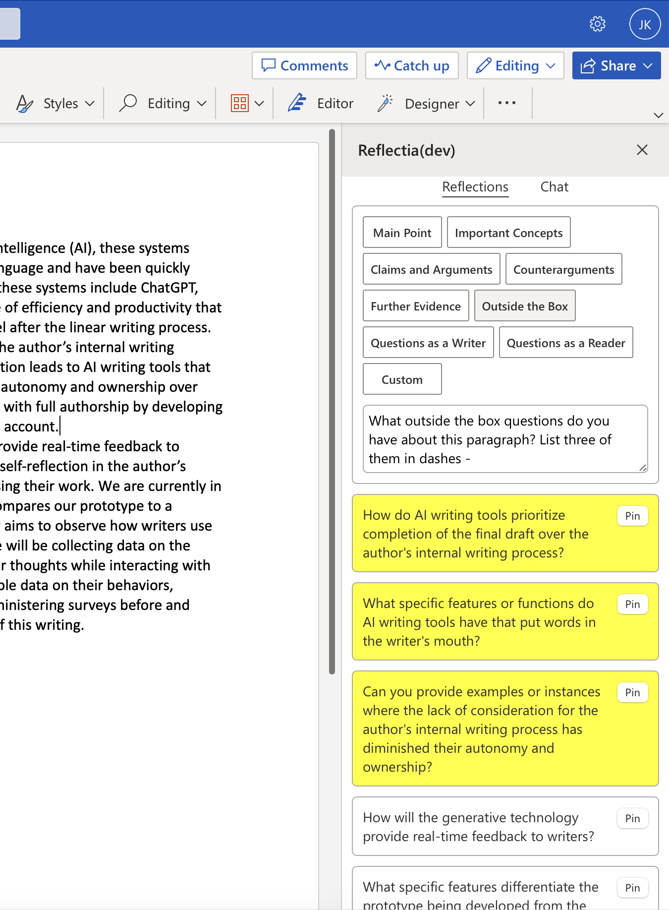
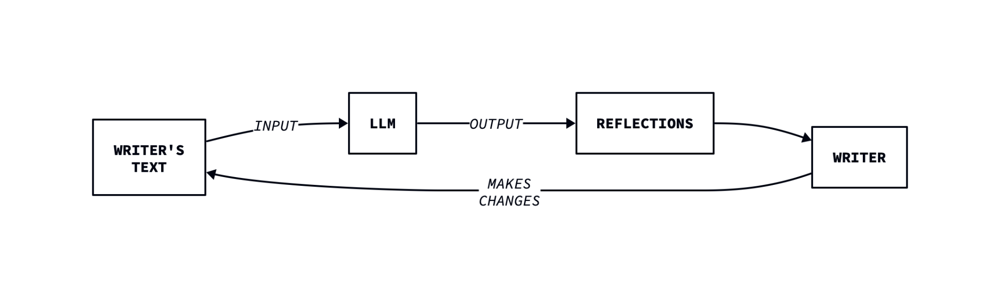

Towards Full Authorship with AI: An Interactive User Interface for Supporting Revision

PDF WMRUGS 2023
Want to know more or try it out? interest form
Abstract
Large language model (LLM)-based writing tools, such as ChatGPT, Bing Chat, and Bard, promise efficiency and productivity; however, they can overshadow the thinking process necessary for original writing, compromising autonomy and authorship. This limitation is not intrinsic to LLM itself but is due to the design of the chatbot user interface, which encourages reliance on a LLM for both thinking and writing. In order to explore alternative approaches and the potential benefits that LLMs can offer to the writing process, we have implemented a user interface that encourages writers to reflect on texts they wrote themselves. By conducting a pilot study, we investigated the impact of new user interface affordances on encouraging writers to reflect on their writing. Through the analysis of feedback from study participants, we identified ways to improve the interface and interaction, as well as an opportunity to incorporate conversational aspects into our prototype. Additionally, we outlined a potential future research plan to conduct a deployment study to observe user interactions with our interface in a natural setting.
Background
Recent breakthroughs in large language models (LLMs) have led to the development of tools like ChatGPT and Bing Chat, which can produce texts comparable to those written by competent writers. The affordances of these tools encourage users to offload large parts of their thinking and writing onto the LLM. But in doing so, users surrender autonomy and authorship over their writing. Could LLMs instead encourage writers to reflect on texts that they wrote themselves? Could these reflections lead them to make meaningful revisions to their texts?
Our goal is to provide writers with a tool that promotes reflection and encourages revision of their writing.
Approach
Research in rhetoric and composition shows that revision is often driven by the realization of a novel idea and the recognition and development of new connections and arguments. To facilitate this process, we have developed a UI that displays reflection cards. These cards can either contain a summary of important ideas in the text, or non-directive feedback generated by the LLM. By enabling writers to interact with these cards, our aim is to provide them with opportunities to reflect on their writing, helping them in making original discoveries that result in meaningful revisions.

Pilot Study
To compare our novel interface with the existing interface, we also prototyped a traditional LLM-powered chatbot and conducted a within-subjects study with four participants:
- During the study, participants verbally reflected on the cards and how they would help them revise their text better.
- We observed changes in their perceptions and expectations throughout their interactions with the prototypes.
- We also interviewed them to assess their satisfaction with the UI and collected feedback for improvements.
Implementation
Key Concepts:
For faster prototyping, we developed our user interface as a Microsoft Word add-in.
Predefined prompts consist of buttons that users can select, prompting the LLM to generate summary texts or non-directive feedback based on the chosen prompt.
Users have the option to customize prompts to better meet their needs, which is facilitated by the prompt editor.
Once modifications are made to a prompt, it can be saved as a “Custom” prompt. Currently, only one “Custom” prompt saving is supported, but it can be overwritten.
Highlighted cards indicate the current paragraph that the user is revising. Users can also attach each card as a comment to the respective paragraph by pinning it.
Selecting a particular card will highlight the associated paragraph.
Example:
Writer’s Text:
“Alan Turing's favorite poem was Jabberwocky by Lewis Caroll…”Predefined Prompt:
“What questions do you have about this paragraph as a reader? List three of them in dashes -”Reflections (generated by add-in)
- Why was Alan Turing's favorite poem Jabberwocky?
- How did Alan Turing come across this poem?
- What other works by Lewis Carroll did Alan Turing enjoy?
Results and Conclusion
- From our pilot study, we gained insights about our UI design, discovered what worked and what did not, and identified features that should have been added, such as automatically loading the document as a context for the chatbot prototype.
- Our novel interface showed positive results with prompts that generated summaries of texts and non-directive feedback. For instance, feedback generated from the “Questions as a Reader” prompt was found to be helpful for reflection.
- However, some participants found our initial user interface confusing to use, especially with highlighting features.
- With the traditional chatbot prototype, some participants appreciated the flexibility offered by the conversational feature of the chatbot. For example, one participant copied the predefined prompt to the chatbot interface to have a more refined conversation about the prompt.
- This hinted to us that combining the chatbot interface with our novel interface could be worth exploring.
- Overall, we have found some preliminary evidence that our approach was working.
Acknowledgements
We would like to thank Dr. Keith Vander Linden and Dr. Kristine Johnson for their feedback and advice. We would also like to express our gratitude to the participants of our pilot study. This research is supported by the Wierenga Family Foundation Summer Research Fellowship for Sciences and the National Science Foundation under grant number 2246145.